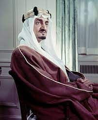
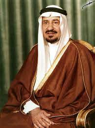
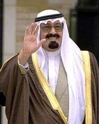
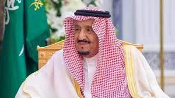

عبد العزيز بن عبد الرحمن بن فيصل آل سعود، (ذو الحجة 1292 هـ/يناير 1876م ربيع الأول 1373 هـ/نوفمبر 1953م) هو مؤسس المملكة العربية السعودية الحديثة وأول ملوكها، والحاكم الرابع عشر من أسرة آل سعود. ولد في الرياض لأسرة آل سعود الحاكمة في نجد، ولما بلغ الخامسة عشر من عمره انتقل مع عائلته إلى قطر ثم البحرين ثم إلى الكويت بأمر من الدولة العثمانية واستقبلهم شيخها آنذاك محمد الصباح بعد انتصار محمد بن عبد الله الرشيد حاكم حائل على الإمام عبد الرحمن بن فيصل بن تركي آل سعود آخر أئمة الدولة السعودية الثانية.
سعود بن عبد العزيز بن عبد الرحمن آل سعود ولد في الكويت بتاريخ 3 شوال 1319هـ/15 يناير 1902 وتوفي في 6 ذو الحجة 1388هـ/23 فبراير 1969م، ملك المملكة العربية السعودية الثاني، والحاكم الخامس عشر من أسرة آل سعود. خلال الفترة من 9 نوفمبر 1953 إلى 2 نوفمبر 1964. هو الابن الثاني من أبناء الملك عبد العزيز آل سعود الذكور من زوجته وضحى بنت محمد بن برغش بن عريعر، ولد في نفس السنة التي استعاد فيها والده الملك عبد العزيز آل سعود الرياض من آل رشيد. وهو الملك الوحيد من ملوك السعودية الذي انتهى حكمه بالعزل من قبل أفراد العائلة المالكة وليس بالوفاة.

فيصل بن عبد العزيز بن عبد الرحمن آل سعود (14 صفر 1324 هـ / 14 أبريل 1906 - 12 ربيع الأول 1395 هـ / 25 مارس 1975)، ملكُ المملكة العربية السعودية الثالث، والحاكمُ السادس عشر من أسرةِ آل سعود، والابن الثالث من أبناء الملك عبد العزيز الذكور من زوجته الأميرة طُرفة بنت عبد الله بن عبد اللطيف ابن الشيخ عبد الرحمن ابن الشيخ حسن آل الشيخ حفيد إمام الدعوة الشيخ محمد بن عبد الوهاب.

خالد بن عبد العزيز بن عبد الرحمن آل سعود (6 ربيع الأول 1331 هـ / 13 فبراير 1913 - 21 شعبان 1402 هـ / 13 يونيو 1982 م)، وُلِد الملك خالد خلال الأيام التي كان والده مشغولاً باسترداد الأحساء من الأتراك، وقد استبشر بمولد ابنه خيرًا وأسماه خالدًا ، ملك المملكة العربية السعودية الرابع من 25 مارس 1975 - 13 يونيو 1982. هو الابن الخامس من أبناء الملك عبد العزيز الذكور من الأميرة الجوهرة بنت مساعد بن جلوي بن تركي آل سعود والتي تعدّ أولى زوجات الملك عبد العزيز من آل سعود. توفي الملك خالد في صباح يوم الأحد 21 شعبان 1402 هـ الموافق 13 يونيو 1982 م، بمدينة الطائف عن عمر 69 سنة، ودفن في مقبرة العود بالرياض
فهد بن عبد العزيز بن عبد الرحمن آل سعود (1921 - 26 جمادى الآخرة 1426 هـ / 1 أغسطس 2005)، خامس ملوك المملكة العربية السعودية وأولهم اتخاذاً للقب خادم الحرمين الشريفين. هو الابن التاسع من أبناء الملك عبد العزيز الذكور، من زوجته الأميرة حصة بنت أحمد السديري. تولى مقاليد الحكم في 21 شعبان 1402 هـ الموافق 13 يونيو 1982م بعد وفاة أخيه غير الشقيق الملك خالد. أصيب بجلطة في نوفمبر 1995، ومنذ عام 1997 تولى عبد الله بن عبد العزيز ولي العهد حينها إدارة معظم شؤون البلاد اليومية.

عبد الله بن عبد العزيز بن عبد الرحمن آل سعود (1343 هـ / 1924- 3 ربيع الثاني 1436 هـ / 23 يناير 2015م)، الملك السادس للمملكة العربية السعودية، ويلقب بخادم الحرمين الشريفين وهو ذات اللقب الذي اتخذه الملك فهد قبله، هو الابن الثاني عشر من أبناء الملك عبد العزيز الذكور، وأمه هي فهدة بنت العاصي بن كليب بن شريم العبدي الشمري، ولد في عام 1924م بمدينة الرياض. في عام 1995م استلم إدارة شؤون الدولة وأصبح الحاكم الفعلي بعد إصابة الملك فهد بجلطات ومتاعب صحية عدة، وبعد وفاة الملك فهد في 1 أغسطس 2005م أصبح الملك رسمياً، وبالإضافة لكونه ملكا للدولة فقد كان يشغل منصب رئيس مجلس الوزراء تبعا لأحكام نظام الحكم في المملكة القاضية بأن يكون الملك رئيسًا للوزراء.

سلمان بن عبد العزيز بن عبد الرحمن آل سعود (5 شوال 1354 هـ / 31 ديسمبر 1935) ملك المملكة العربية السعودية السابع، والقائد الأعلى لكافة القوات العسكرية، الحاكم العشرون من أسرة آل سعود والابن الخامس والعشرون من أبناء الملك المؤسس عبد العزيز بن عبد الرحمن آل سعود من زوجته الأميرة حصة بنت أحمد السديري. وهو أحد أهم أركان العائلة المالكة السعودية، بصفته أمين سر العائلة ورئيس مجلسها، والمستشار الشخصي لملوك المملكة، كما أنه أحد من يطلق عليهم السديريون السبعة من أبناء الملك عبد العزيز..
| الملوك | مدة الحكم |
|---|---|
| الملك عبدالعزيز | 21سنه و47يوم |
| الملك سعود | 10سنوات و259 يوم |
| الملك فيصل | 10سنوات و143 يوم |
| الملك خالد | 7سنوات و80 يوم |
| الملك فهد | 23سنه و49يوم |
| الملك عبدالله | 9سنوات و175يوم |
| الملك سلمان | 8سنوات والى الان |